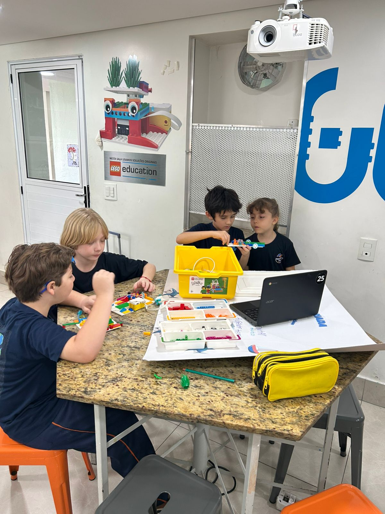

O projeto que estão desenvolvendo é sobre usar robôs para ajudar a limpar a água e proteger os animais e plantas do mar, buscando influencia dobre sustentabilidade. Faznendo para que o oceano fique mais limpo e para peixes possam viver melhor.

📚 Depoimentos da Equipe 📚
"Eu acho que o projeto vai ajudar a gente a entender melhor como podemos cuidar dos rios e mares!" - Luíza
"Esse projeto vai ser muito importante porque pode mostrar como salvar os animais que vivem na água!" - João